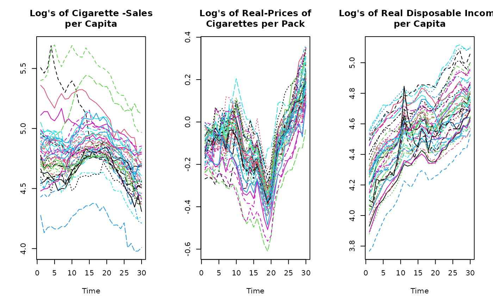

Cigarette Consumption
Cigar.Rda panel of N=46 observations each with time-dimension T=30 from 1963 to 1992
total number of observations : 1380
observation : regional
country : United States
Usage
data(Cigar)Format
A data frame containing :
- state
state abbreviation
- year
the year
- price
price per pack of cigarettes
- pop
population
- pop16
population above the age of 16
- cpi
consumer price index (1983=100)
- ndi
per capita disposable income
- sales
cigarette sales in packs per capita
- pimin
minimum price in adjoining states per pack of cigarettes
Source
Online complements to Baltagi (2001). http://www.wiley.com/legacy/wileychi/baltagi/.
References
Baltagi, Badi H. (2001) Econometric Analysis of Panel Data, 2nd ed., John Wiley and Sons.
Baltagi, B.H. and D. Levin (1992) “Cigarette taxation: Raising revenues and reducing consumption”, Structural Changes and Economic Dynamics, 3, 321--335.
Baltagi, B.H., J.M. Griffin and W. Xiong (2000) “To pool or not to pool: Homogeneous versus heterogeneous estimators applied to cigarette demand”, Review of Economics and Statistics, 82, 117--126.
Examples
data(Cigar)
## Panel-Dimensions:
N <- 46
T <- 30
## Dependent variable:
## Cigarette-Sales per Capita
l.Consumption <- log(matrix(Cigar$sales, T,N))
## Independent variables:
## Consumer Price Index
cpi <- matrix(Cigar$cpi, T,N)
## Real Price per Pack of Cigarettes
l.Price <- log(matrix(Cigar$price, T,N)/cpi)
## Real Disposable Income per Capita
l.Income <- log(matrix(Cigar$ndi, T,N)/cpi)
####################
## Plot the data ##
####################
par(mfrow=c(1,3))
## Dependent variable
matplot(l.Consumption, main="Log's of Cigarette -Sales\nper Capita",
type="l", xlab="Time", ylab="")
## Independent variables
matplot(l.Price, main="Log's of Real-Prices of\nCigarettes per Pack",
type="l", xlab="Time", ylab="")
matplot(l.Income, main="Log's of Real Disposable Income\nper Capita",
type="l", xlab="Time", ylab="")

par(mfrow=c(1,1))